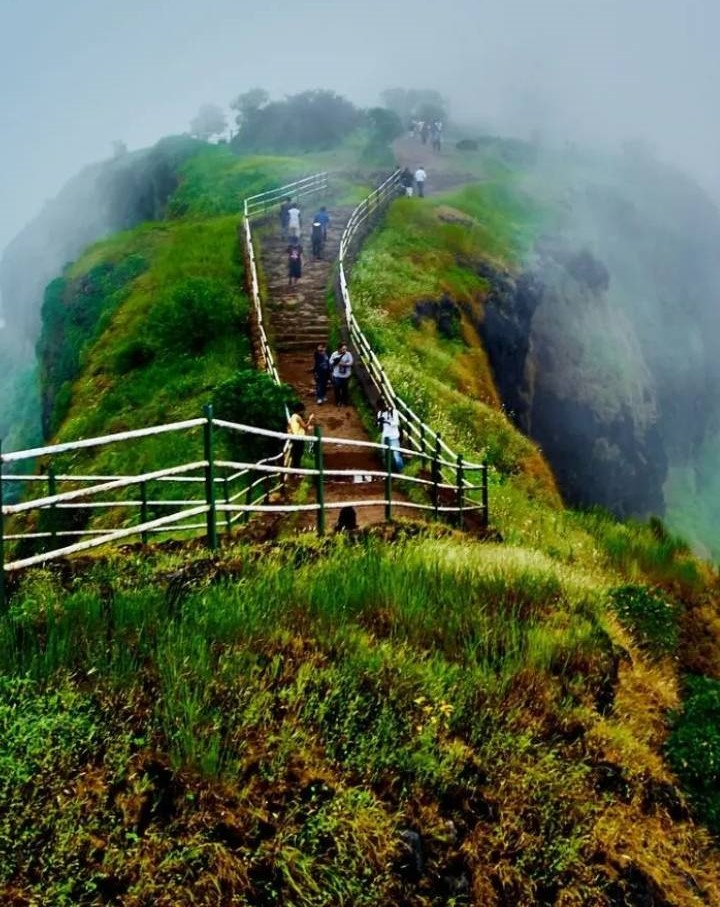
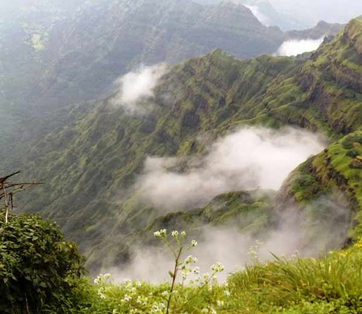
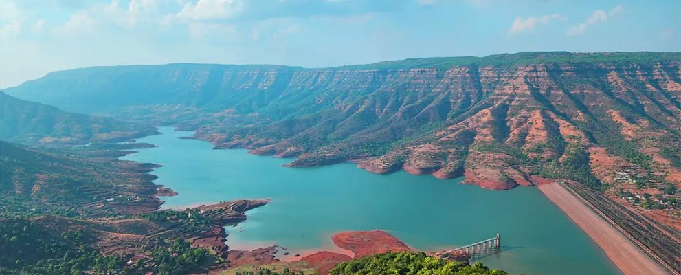
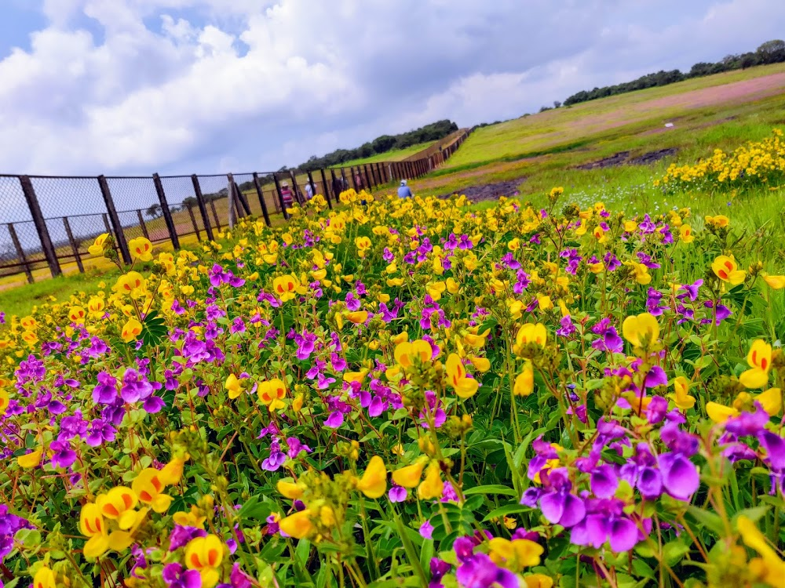
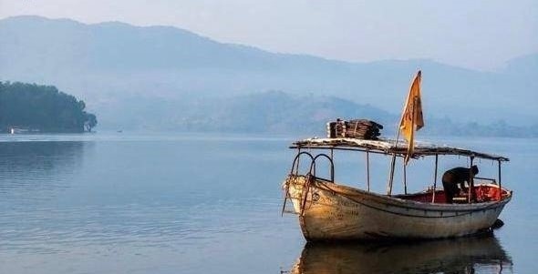

mahabaleshwar is a small town and popular hill station in the western Ghats of maharashtra
it's renowned for its beautiful Landscape,serene environment,pleasant climate and rich
historical heritage.
Places to visit:
Bombay point,Kate's point,sunset point,Krishnabai temple,connaught peak,lodwick point,venna lake
Special attraction:Strawberry farms and fresh Strawberry products.
Best time to visit:
October to June

a calm and scenic hill station near mahabaleshwar.it is well known for its open spaces,colonial
charm,and educational institutions. the main attraction here is Table land,Asia's second largest
volcanic plateau,which offers panoramic view of hill and valleys.
viewpoint:
parsi and sydney point provide stunning sights of the Krishna valley and dhom dam,Table land,
Devil's kitchen
best time to visit:September to may

The Koyna region is a lesser-explored hill and forest area in satara district.it is
surrounded by thick forest and forms part of the Koyna wildlife Sanctuary,one o the largest
wildlife reserves in maharashtra.The area famous for the massive Koyana Dam and
Shivsagar lake.it is a great destination for eco-Tourism.
Attraction:Koyna dam,Shivsagar Lake,Nehru Garden
Best time to visit:October to February

Kas Pathar, located near Satara city,is a UNESCO world Natural Heritage Site.During the Mansoon
months,the plateau turns into a colorful carpet of seasonal wildflowers,attracting nature lovers
and photographers from all over india.
Best time to visit: August to October
Entry & conservation:
Limited number of visitors are allowed per day
online booking is required during peak season
location:
kas pathar is situated about 22-25km from satara city in sahyadri mountain range

Tapola is a small and scenic hill station located in the satara district of maharashtra.
it is popularly known as "Mini Kashmir" of maharashtra because of its beautiful lakes,green hills,
and peaceful surroundings. it is ideal destination for travelers.
Best time to visit:October to march
Tourist activities:
Boating
Kayaking
speed boat rides
Lakeside camping
location:Tapola is situated around 25km from Mahabaleshwar.

Thoseghar waterfall is one the most famous and scenic waterfall in satara.it is located
near Thoseghar village,about 25 km from satara city.The waterfall consists of multiple
cascades,with some falling from a great height.
The area around Thoseghar is developed with viewpoints,railings,and walking paths,making it
safe an comfortable for tourist.
Best time to visit:july to september
How to reach:Drive by road via satara->Gajawadi->Thoseghar.
Local autos/taxis are available from Satara.